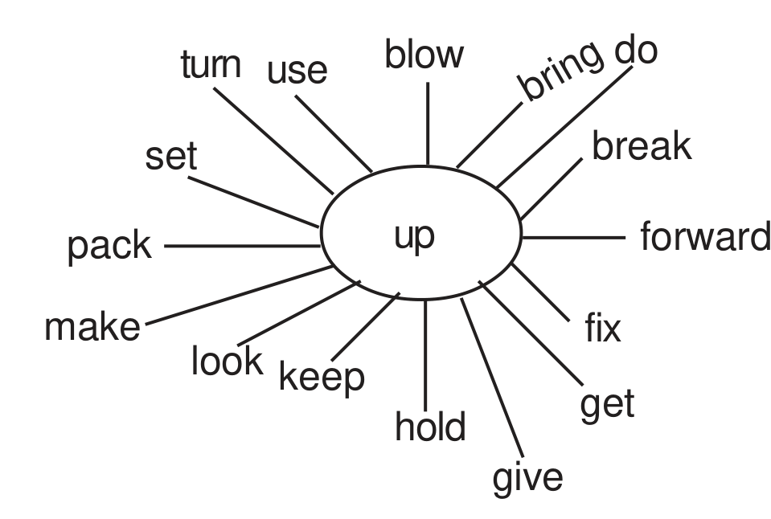

6. Phrasal Verbs
Activity - 5
See the answers with explanations →Dictionary use. Study the diagram given below :

Combine the particle up with the verbs shown as rays and use them in the following sentences putting them into the correct tense form. The meaning of the two word verb has been given in each case.
Example : (To search for something in a dictionary) Please _____ up in the dictionary how the phrase is used. [ Ans. - Look)
- (i)
(To replace some lost thing) We must work hard to _____ up the lost hours.
- (ii)
(to stop working) It’s going to rain, we should _____ up and go home.
- (iii)
(to start a business / an institution) I plan to _____ up a business after getting the degree.
- (iv)
(to exhaust something so that nothing is left) I have _______ up all the petrol in my scooter.
- (v)
(to separate) The group _____ up after the quarrel.
- (vi)
(to leave bed after sleeping) We usually _____ up early in the morning.
- (vii)
(a situation getting better) After three long rainy days the weather is _____ up.
- (viii)
(to come to a meeting) Only a few students _____ up in the class due to heavy rain.
- (ix)
(to destroy by exploration) The platoon of soldiers _____ up a bridge.
- (x)
(to take care of) We should _____ up children with care.
- (xi)
(to make something attractive) We _____ up our house before my sister’s marriage.
- (xii)
(to arrange something to happen) We have _____ up the meeting for the next week.
- (xiii)
(to stop doing something) Don’t _____ up hopes.
- (xiv)
(to obstruct) A marriage procession _____ up the traffic for an hour.
- (xv)
(to maintain something at a high level) We must try to _____ up the honour of our school.
Do similar exercise using after / for / off / on / out. Let there be a competition in the class.